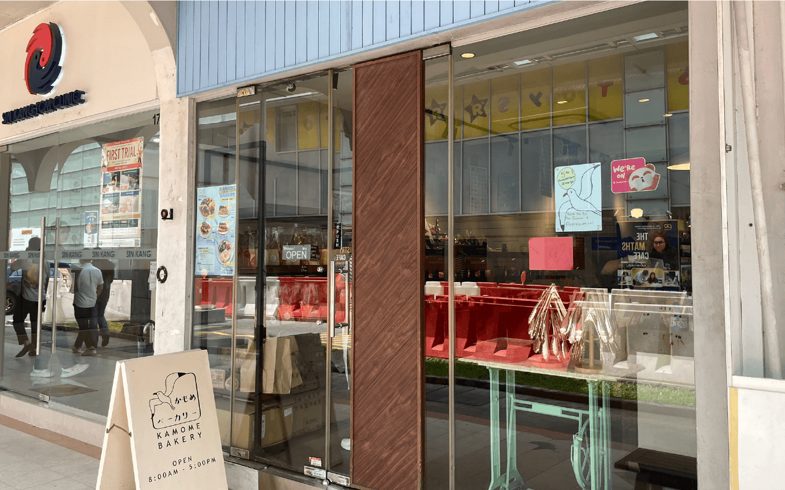
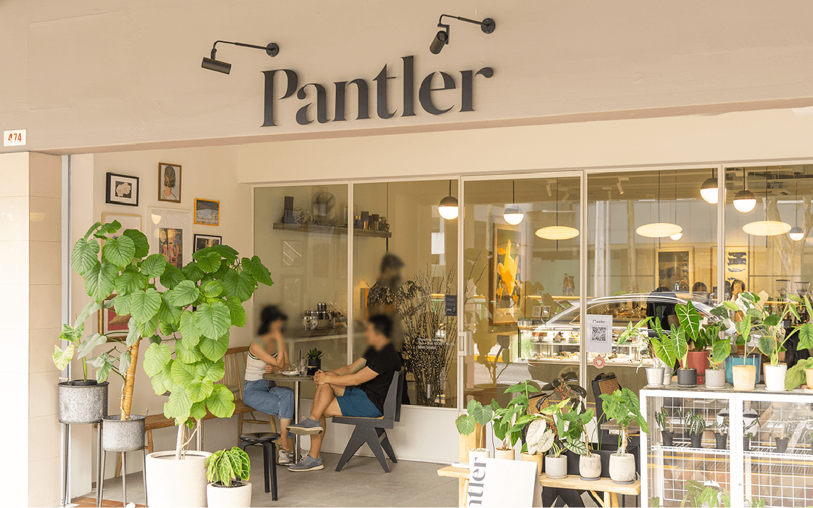

Nesuto @ Jewel Changi Airport
Jewel, 78 Airport Blvd., #01-236 & 237
Singapore Changi Airport, Singapore 819666
Tel: 6980 5072
Nesuto @ Tanjong Pagar
53 Tras St, #01-01, Singapore 078992
Tel: 6980 5977

474 River Valley Rd, Singapore 248359
Tel: 6221 6223